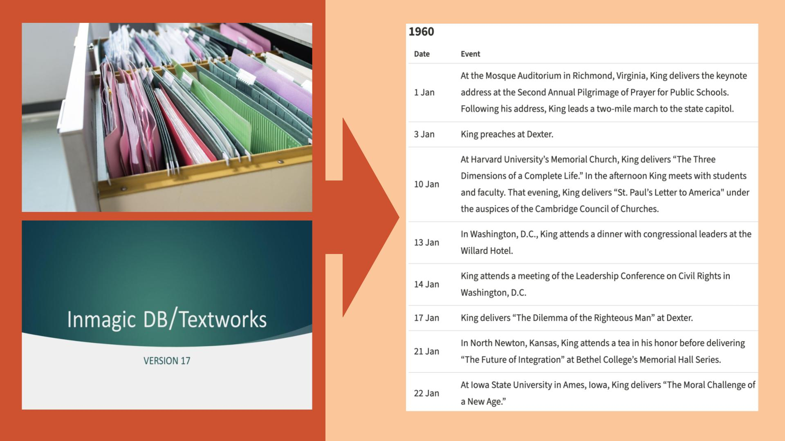

Summer 2024
Martin Luther King, Jr. Digitization Project
Project Lead: Lerone Martin
The mission of the Martin Luther King Jr. Research and Education Institute is to preserve and promote the work and legacy of MLK. We are currently working on a unique project: making our archival holdings of MLK, one of the most iconic individuals of the 20th century, accessible online to a 21st century public. The Papers of Martin Luther King, Jr. project began in 1985, It is a comprehensive collection of King’s most significant correspondence, sermons, speeches, published writings, and unpublished manuscripts. Seven volumes (documented 1929 to 1962) have been published with some content available online and the 8th is in the works. Each volume contains approximately 180 documents. They have become essential reference works for researchers and have influenced scholarship about King and the movements he inspired. However, these large books are pricey and not accessible to all. We intend to build a searchable database and accompanying website that would enable scholars and the public to access, analyze, and learn from the published and unpublished works, writings, and wisdom of Martin Luther King, Jr.
Project Members
Project Member
Designation
Lerone Martin
Associate Professor of Religious Studies and African and African American Studies
Fiona Han
Undergraduate Researcher - Summer, 2024
Digitizing Dr. King’s Legacy: Research for Volume VIII Publication and Interactive Projects
This summer, our primary research goal was to help the publication of the upcoming eighth volume of Dr. King’s papers and to lay the groundwork for the digitization of earlier volumes.
Given the complexity of Dr. King’s life and the civil rights movement, we concentrated on cataloging documents from the 1950s to the 1970s. Our collection included letters, declassified FBI memos, speech recordings, photos, and more. The data is stored in two databases hosted on DBtextworks and FileMaker Pro. By sifting through correspondence from various organizations across different states and areas of focus, we created a cohesive timeline of Dr. King’s activities in 1963 and the movements he led for the eighth volume. Essentially, we are able to chronologize Dr. King’s activities almost daily. The most critical documents are selected for publication after a group discussion and voting.

In addition to what we learned from the documents procured by the institute, I further supplemented this era of Dr. King’s life by conducting extensive background research to provide a more comprehensive picture of the civil rights movement in the 1960s. To ensure our volumes are as thorough as possible, we identified specific gaps in knowledge raised by correspondences selected for Volume VIII. I researched newspapers, interviews, and other sources to address these gaps with detailed and accurate context. I also reached out to civil rights organizations such as AFL-CIO and university archives to expand our document collection and network.
The institute is working to digitize its previously physical volumes to enhance accessibility. I maintained our website and contributed to webpage developments as we digitized the series. Given the volume of textual data we have compiled, I plan to create interactive offerings for students, teachers, and researchers to engage with and visualize Dr. King’s legacy after the publication of the newest volume. These projects include timelines featuring interactive maps of major events in Dr. King’s life for students seeking a broad overview of Dr. King’s life and activism; another visual tool aims to track Dr. King’s rhetorical strategies, including examples of his speeches and sermons that highlight shifts in his oratory style. These projects will provide students, teachers, and researchers with a deeper and more engaging understanding of Dr. King’s legacy at a time when we may need his wisdom.